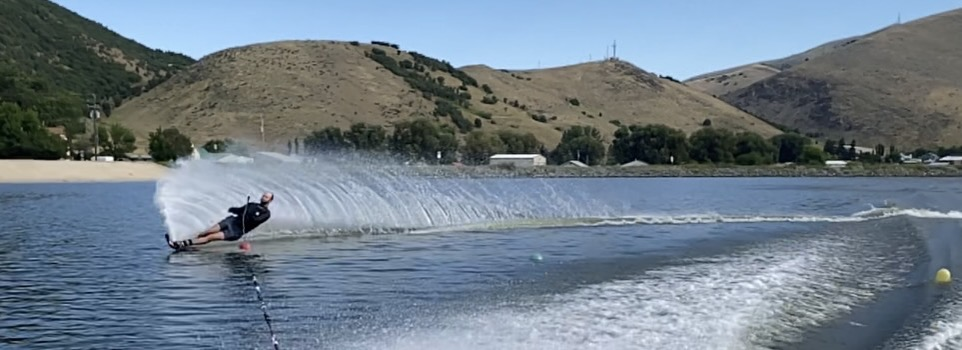

Slolam Sking
Slalom skiing is an exhilarating water sport that involves navigating a series of buoys on a single ski while being towed behind a boat. It requires precision, skill, and agility, as skiers strive to complete the coarse with the shortest length or rope possible.
What is called open water skiing is what most people like to do.
Ski Boats


Popular boat models known for their suitability for slalom skiing include the Malibu Response, MasterCraft ProStar, and Nautique Ski Nautique. Ultimately, the best boat for slalom skiing will depend on personal preferences, budget, and specific requirements.
Water Skis


Choosing the best water skis for slalom skiing depends on various factors including your skill level, preferences, and budget.
The Coarse

The coarse is laid out with a seris of buoys spaced at specific intervals. The boat speed and rope length are determined based on the skiers skill level.
The Skier enters the course through the entry gates.
The skier is to go around each bouy, there are six total.
After going around each bouy the skier to to exit through the gates at the end of the circuit.
Ski Rope


When choosing a slalom ski rope, consider factors such as rope material, whether you prefer a coated or non-coated rope. Ultimately, the best slalom ski rope for you will depend on your individual preferences and needs.
Some popular slalom ski handles among enthusiasts include the HO Sports Syndicate Alpha Handle, Radar Control Arc Handle, Connelly Proline LG Handle, and Masterline Custom Handle. Ultimately, the best handle for you will depend on your personal preferences and skiing needs. If possible, try out different handles to see which one feels the most comfortable and provides the best performance for your skiing style.
Water

The best water conditions for slalom skiing typically involve smooth, calm water with minimal wind or waves. It can be dangerous if the water condition below is not met as injuries can occur.
Training
Training can be done both during the summer and the winter. Slalom skiing requires a combination of strength, balance, agility, and technique. Consistent practice, proper technique, and a well-rounded training regimen will help you improve your slalom skiing skills and performance over time.
Below is what can be done during the winter to keep in shape:
Below is what should be done during the summer:
The Best Sport Ever
Beyond the rush of adrenaline and the thrill of speed, slalom skiing provides a full-body workout that enhances strength, endurance, and coordination. slalom skiing fosters a sense of community, with opportunities to ski alongside family and friends or connect with like-minded individuals in clubs and competitions. Beyond its physical and social benefits, slalom skiing cultivates mental focus, discipline, and problem-solving skills, making it not just a sport, but a fulfilling and enriching lifestyle choice.